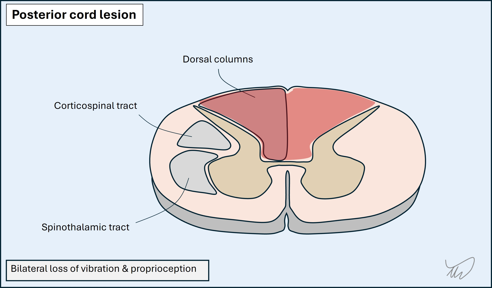

Case 4. Progressive lower limb numbness
Where is the lesion?
The problem is lower limb sensory disturbance which gradually ascended and now affects part of the trunk.
Initially this might have sounded like a polyneuropathy with numb feet and shins, and this would be a very sensible assumption if someone met the patient at that stage. However, this would cause a glove-and-stocking pattern of sensory loss, affecting the longest nerves first. By the time the nerves innervating skin to the knees are affected, the fingertips start to become involved, and as the numbness ascends further above the thighs the entire hand and then forearms will be involved - this isn't the case here.
Instead, sensation was lost above the knees and all the way to the umbilicus (T10) before stopping at a discrete level, with circumferential sensory disturbance. The upper limbs are not involved. This is much more suggestive of a spinal cord disorder with a sensory level present.
Another pointer against this being neuropathy is the retained reflexes. While small fibre neuropathy can cause sensory disturbance with intact reflexes, this would feature loss of pinprick sensation - which isn't present here. Loss of vibration sensation is seen in large fibre neuropathy - but in this, the reflexes are lost.
If the symptoms had not ascended to the torso, we might have wondered about cauda equina disease, but now they have passed higher than the lumbosacral dermatomes that would be affected in cauda equina pathology.
Hence, this is clearly a spinal cord problem. We can go further than this.
The 'latitude' (height) of the lesion seems to be lower thoracic. The level is usually at or 1-2 levels above the clinical sensory level, so we are likely dealing with something in the T8-T10 ballpark.
What about the place within the cord? The clinical picture is of dorsal column sensory modality loss - with spared spinothalamic modalities and no motor features. It is also bilateral and symmetrical.

So now we know the height, antero-posterior and lateral localisation of the lesion: bilateral dorsal columns at T10 clinically, with a lesion probably slightly higher (T8-T9).
What is the lesion?